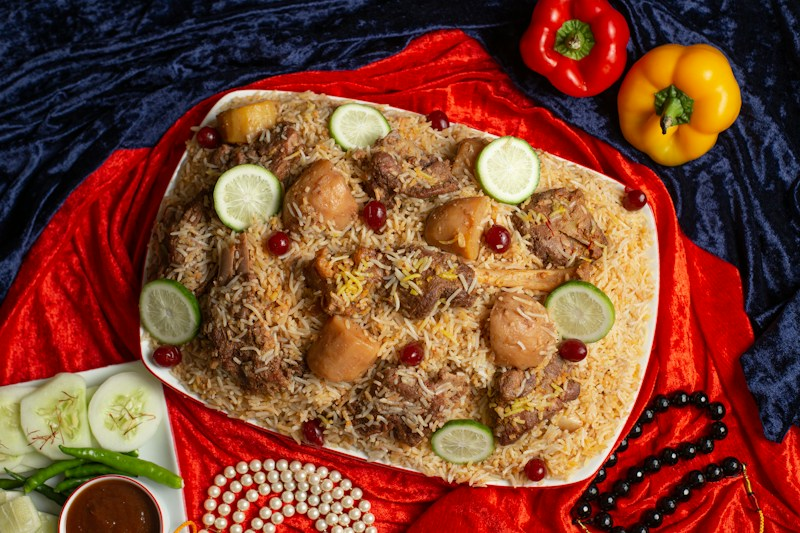

Chicken Biryani

Home
Description
Chicken biryani is a popular South Asian rice dish made with chicken, rice, and aromatic spices.
It is known for its rich flavor and fragrant aroma.
Ingredients
- 2 cups basmati rice
- 500 g chicken pieces
- 2 onions, sliced
- 2 tomatoes, chopped
- 1/2 cup plain yogurt
- 2 tablespoons cooking oil
- 1 tablespoon ginger-garlic paste
- Biryani spices to taste
- Fresh coriander and mint
- Salt to taste
- Water as needed
Steps
- Wash the rice and soak it for about 20 minutes.
- Heat the oil in a pot and cook the sliced onions until golden.
- Add the ginger-garlic paste and chicken. Cook until the chicken changes color.
- Add tomatoes, yogurt, biryani spices, and salt. Cook until the chicken is nearly tender.
- Boil the rice separately until it is partially cooked, then drain it.
- Layer the rice over the chicken mixture and add the coriander and mint.
- Cover the pot and cook on low heat until the chicken is fully cooked and the rice is tender.
- Gently mix the layers and serve hot.